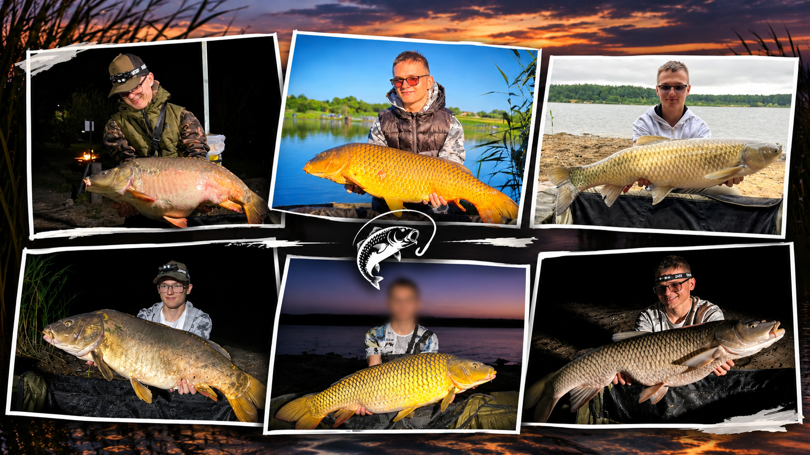

Я навчаюсь на спеціальнісь інформаційні системи та технології
Моє хобі - це риболовля(карпфішинг)
У вільний час я захоплююся карпфішингом. Це не просто звичайна риболовля, а справжня стратегія, терпіння, робота з тактикою підгодовування та відпочинок на природі.
Мені подобається продувати кожну деталь від вибору точки лову до підгодловки і вибору насадок
Мої найбільші трофеї:

Карта Луцька:
YOUTUBE